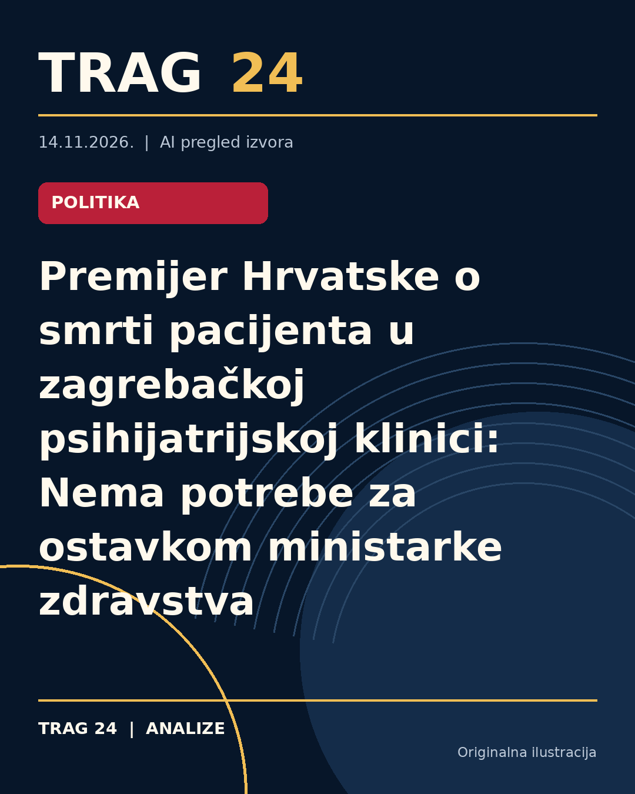

Premijer Hrvatske o smrti pacijenta u zagrebačkoj psihijatrijskoj klinici: Nema potrebe za ostavkom ministarke zdravstva

ŠTA SE DOGODILO
Kristian Josip Periš, bivši atletičar i trener, preminuo je 21. oktobra u zagrebačkoj Klinici za psihijatriju 'Sveti Ivan'. Nakon smrti, početkom novembra uhapšena su četvorica medicinskih tehničara zbog sumnje na teško ubistvo, a protiv njih je određen istražni zatvor. Ovaj događaj izazvao je širok javni odjek, što je dovelo do ostavki direktorke Klinike, njene zamjenice, pomoćnika za sestrinstvo i članova upravnog veća imenovanog od strane Grada Zagreba.
HRONOLOGIJA
Smrt pacijenta dogodila se 21. oktobra. Međutim, Klinika je Ministarstvo zdravstva obavestila o incidentu sa zakašnjenjem od dve nedelje. Snimke videonadzora pregledane su tek 4. novembra, kada su uočena nepravilna postupanja zdravstvenih radnika, o čemu je bolnica obavestila policiju i predala snimke kao dokazni materijal. Nakon ovih otkrića pokrenute su interne procedure otkaza zaposlenima za koje se sumnja da su učestvovali u incidentu. Javni protesti i komemoracije održane su u više gradova Hrvatske kao izraz podrške Periševoj porodici i osude događaja.
ŠTA NAVODE IZVORI
Premijer Hrvatske Andrej Plenković izjavio je da nema potrebe za ostavkom ministarke zdravstva Irene Hrstić jer je 'Sveti Ivan' gradska, a ne državna bolnica. Takođe je ukazao na činjenicu da bolnica kasnila s obaveštavanjem Ministarstva o smrti pacijenta, što je ocenio kao neprihvatljivo i potencijalni pokušaj zataškavanja. Izvor navodi da se i dalje razmatra eventualno proširenje istrage na druge učesnike u događaju. Zdravstvena inspekcija identifikovala je niz propusta pri dokumentovanju i postupcima u bolnici. Hrvatska lekarska komora osudila je nasilje, ali i izrazila zabrinutost zbog pretnji zdravstvenim radnicima.
ŠTA JE POTVRĐENO
Potvrđeno je da je smrt Kristian Josipa Periša uzrokovana povredama koje uključuju prelome rebara i grudne kosti, podlive i edeme pluća i srca. Četvorica medicinskih tehničara uhapšena su pod sumnjom za teško ubistvo vezano za ovaj slučaj. Direktorica klinike i drugi članovi uprave podneli su ostavke. Postoji službena zdravstvena inspekcija koja je utvrdila propuste i nepravilnosti u postupanju bolnice. Snimci videonadzora prikazuju nehumsko postupanje medicinskih radnika prema pacijentu. Javni skupovi održani su kao znak sećanja i protest.
ŠTA NIJE POTVRĐENO
Nije potvrđeno da ministarka zdravstva treba da podnese ostavku, kao ni tačna uloga predstavnika vlade u Upravnom veću Klinike u ovom slučaju. Takođe, uzrok smrti još nije pravno i medicinski definitivno razjašnjen jer postupak utvrđivanja uzroka traje. Nema potvrde o eventualnom širini istrage ili da li će biti drugih procesa i disciplinskih mera prema zaposlenima osim onih koji su do sada poznati.
ŠTA OSTАJE OTVORENO: Ostaje otvoreno ispitivanje svih okolnosti koje su dovele do smrti pacijenta, kao i odgovornost svih aktera u sistemu zdravstvene zaštite uključujući menadžment bolnice i državne predstavnike. Takođe, pitanje je da li će političke posledice zahvatiti i ministarku zdravstva ili druge zvaničnike. Potrebno je pratiti dalji razvoj istrage i eventualne pravne korake. Takođe je neizvesno kako će zdravstveni sistem i društvo reagovati na ovakve incidente u budućnosti.
Izvori
- https://insajder.net/prenosimo/premijer-hrvatske-uprkos-smrti-pacijenta-nema-potrebe-za-ostavkom-ministarke-zdravstva
- https://nova.rs/vesti/svet/premijer-hrvatske-uprkos-smrti-pacijenta-nema-potrebe-za-ostavkom-ministarke-zdravstva/
- https://www.danas.rs/svet/premijer-hrvatske-uprkos-smrti-pacijenta-nema-potrebe-za-ostavkom-ministarke-zdravlja/
Ova analiza je pripremljena uz pomoć veštačke inteligencije na osnovu javno dostupnih izvora. Navodi izvora nisu nužno nezavisno potvrđeni.